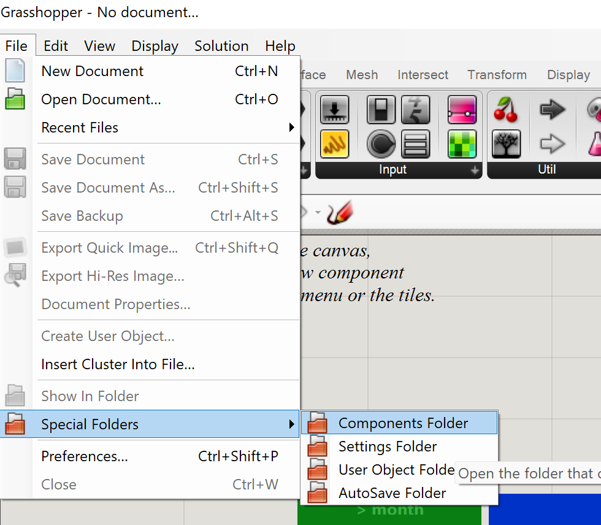

This post will talk about setting up RhinoCircular.
RhinoCircular is developed on:
RhinoCircular is fully supported for:
The standard release package for RhinoCircular is a file called CircularConstruction.gha.
The newest information for RhinoCircular will be updated here once we release a beta version of RhinoCircular.
Version: 0.00.20210730
Download Binary: Download
Check Sum MD5: 000000000000000000000000000000000000000
Release Notes:
Currently we will put temporary placeholders here.
Before you install, you might want to check whether the binary you downloaded is original and complete. This reduces the risk of installing broken plug-in caused by internet issues during download, or plug-in that is maliciously changed by others. Just follow this article: How To: How and when to use CheckSum (MD5)
There is a directory that Rhino and Grasshopper can see and load Grasshopper plug-ins. To find this directory, first open up Grasshopper from Rhino, then go to Special Folders- Component Folder.

A folder most likely located in C:\Users\YOUR_USER_NAME\AppData\Roaming\Grasshopper\Libraries will open. This is the place where Grasshopper loads all its plug-ins.
With a peace of mind that your copy of RhinoCircular is original, we can proceed to install. Drag the CircularConstruction.gha into this directory and restart Rhino. Re-open Grasshopper, and you should be all set.